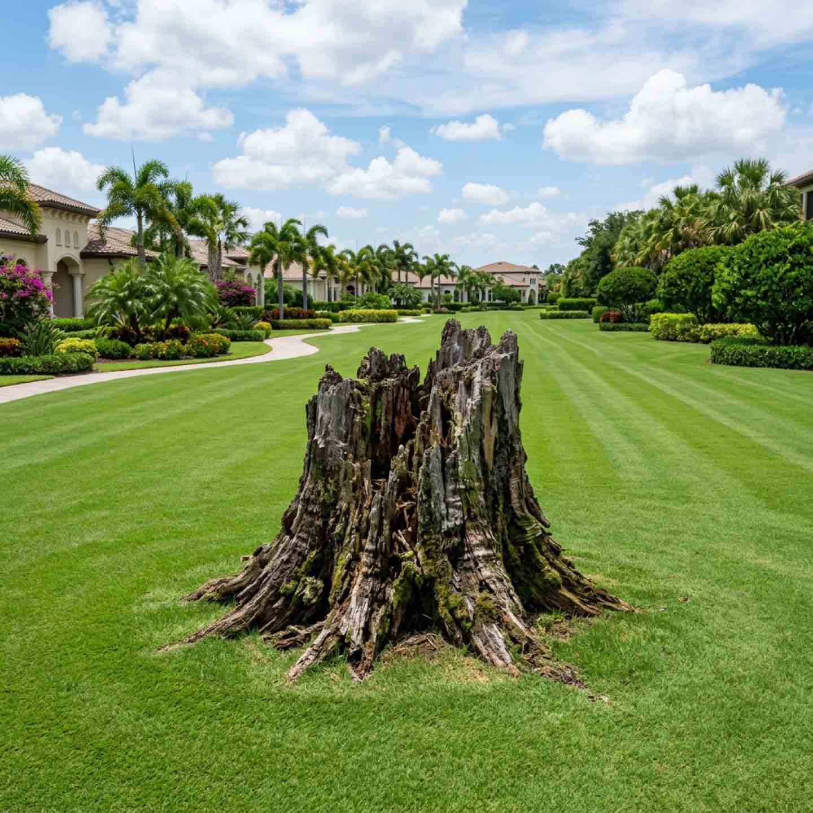

Community Asset Preservation
Stump Grinding for Sarasota's Managed Communities
Eliminate trip hazards, pest problems, and eyesores across your common areas.
Old Stumps Are More Than Ugly
Every old stump in your community is a trip hazard, a pest magnet, and a maintenance headache. Termites, ants, and fungi thrive in decaying stumps. Mowing crews have to work around them. Residents complain about how they look.
Arborist Art grinds stumps below grade and cleans up the site so your grounds crew can mow right over the spot. Whether it is one stump from a recent removal or dozens of old stumps that have been sitting for years, we handle it efficiently with minimal disruption to your community.
Stump grinding is included as an option with all of our tree removal services.

Stump Grinding Services
Below-Grade Grinding
We grind every stump 6 to 12 inches below the surface so the area can be filled, graded, and planted over. No visible remnants left behind.
Multi-Stump Projects
Clearing dozens of old stumps across your community? We provide volume pricing and can schedule the work zone by zone to minimize disruption.
Site Restoration
After grinding, we remove the wood chips, fill the hole with clean soil, and grade the area so it is ready for sod or landscaping.
Same-Day Add-On
Having trees removed? Add stump grinding to the same service call for efficiency and cost savings. One crew, one visit, complete results.
Clean Grounds. Zero Hazards.
Trip Hazard Elimination
Protect your residents and reduce your community's liability by removing stumps from walkways, common areas, and landscaped zones.
Pest Prevention
Decaying stumps attract termites, carpenter ants, and wood-boring beetles. Grinding eliminates the food source.
Curb Appeal
Old stumps drag down the look of your community. Removal is one of the simplest improvements with the biggest visual impact.
How It Works
Identify and Map
We survey your community and map every stump that needs grinding, including size and access considerations.
Scope and Pricing
Your board receives a clear proposal with per-stump or volume pricing and a timeline for completion.
Efficient Grinding
Our crew works zone by zone with professional grinding equipment. Most stumps take less than an hour each.
Cleanup and Restoration
Wood chips removed, holes filled, area graded. Ready for your grounds crew to maintain or plant over immediately.
Stump Grinding Questions
Clear the Stumps. Clean Up Your Community.
We will map every stump in your community and give your board a clear plan and price.
Request Stump Grinding Service
Tell us how many stumps and where they are located in your community Tyler will reach out personally.
941-233-3976
Direct arborist access for property managers and board members.
Site Restoration
We do not just grind and leave. We restore the site for immediate maintenance or landscaping.